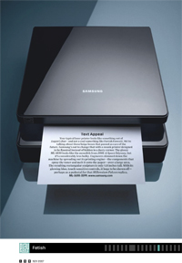
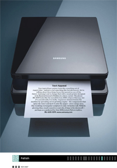
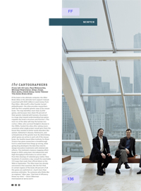
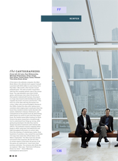

Who is Zana Woods?
Zana is a freelance producer and photo consultant based in New York. Her focus is still photography, video, and photo editing.Formerly the Director of Photography for Wired Magazine in San Francisco, California, her focus at Wired was on environmental and celebrity portraiture, photojournalism and product photography. Prior to Wired, she was an art buyer at Foote, Cone & Belding working on a variety of accounts including AT&T, MTV and Dockers.
Zana was recently awarded Picture of the Year by the Lucie Foundation for 2012. Her work has been recognized by American Photography, Society of Publication Designers and Photo District News. She has been honored to judge photography for Visa Pour L'Image, Palms Springs Photo Festival, Communication Arts, and American Photography.
Website design: Nika Simovich
 Samsung Printer
Samsung Printer Allen Brain Atlas
Allen Brain Atlas